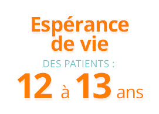
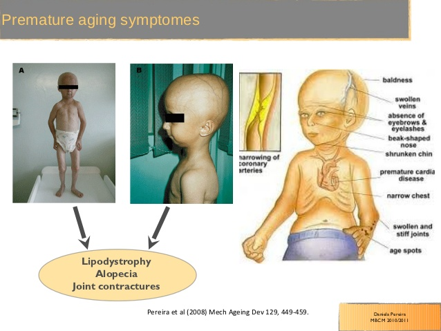
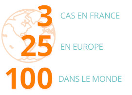

Qu'est-ce que c'est ?
Le syndrome de Hutchinson-Gilford ou plus communément appelé progeria est une maladie génétiquement rarissime. Progéria vient du grec "geron" qui veut dire "le vieillard". Comme son nom l'indique c'est une maladie qui présente un vieillissement accéléré sur les malades.
Cette maladie est due a la mutation d'un gène nommé LMNA (situé sur le chromosome 1) non présente chez les parents. Il est très important de savoir que l'experence de vie des malades est tres limitée : en moyenne 12-13 ans. Le plus souvent la mortalité précoce est causée par une athérosclérose ou un accident vasculaire cérébral.

{kind=link}
Les symptomes

- Alopécie : accélération de la chute des cehveux et des poils.
- Morphologie caractéristique du visage : nez pincé, petites machoires, petite tête.
- vieillissement de la peau : rides...
- Athérosclérose : maladie touchant les arteres.
- Problemes cardio-vasculaire.
- Petite taille : inferieur a 110 cm.
- Poids faible : 25 kg maximum.
...
Il faut cependant souligner que leurs capacités cognotives ne sont pas altérées.
Cette maladie a beau avoir des répercussions importantes sur le physique des patients, elle ne retarde absolument pas leur développement mental. Ces enfants sont suivis médicalement toute leur vie, surtout en raison des risques cardio-vasculaires, mais ils peuvent avoir une vie sociale, être scolarisés, faire des études...
En somme, être intégrés normalement dans notre sociétéStatistiques
C'est une maladie rarissime puisque en france on ne connait que 3 cas, en Europe on en compte 25 et une centaine dans le monde. Seulement un nouveau-né sur 10 a 20 millions est atteints.
